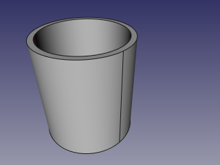

Congiunzione |
| Posizione nel menu |
|---|
| Part → Giunzione → Congiungi oggetti |
| Ambiente |
| Part |
| Avvio veloce |
| Nessuno |
| Vedere anche |
| Incastra, Asporta, Operazioni booleane, Spessore |
Descrizione
Lo strumento Congiungi serve per unire due oggetti vuoti internamente, ad esempio dei tubi. Si possono anche unire shell e wire.
Uso
- Selezionare due oggetti da unire.
L'ordine di selezione non è importante. È sufficiente selezionare una qualsiasi sotto-forma di ciascun oggetto (ad esempio, delle facce). È inoltre possibile selezionare un composto contenente tutte le forme da collegare, ad esempio una Schiera di Draft. - Invocare il comando Congiungi oggetti.
Viene creato un oggetto parametrico Connect. Nella vista 3D viene mostrato il risultato della congiunzione, e gli oggetti originali sono nascosti.
Proprietà
Connect
- DATAObjects: Elenco degli oggetti da collegare. In generale, sono necessari almeno due oggetti, ma va bene anche un singolo composto contenente le forme da collegare. (Da FreeCAD v0.17.8053, questa proprietà non viene visualizzata nell'editor delle proprietà, e si può accedere solo tramite Python).
- DATARefine: Stabilisce se alla forma finale deve applicare l'operazione Affina, oppure no. Il valore di default è stabilito dalla casella di controllo 'Affina automaticamente la forma dopo l'operazione booleana' nelle preferenze di PartDesign.
- DATATolerance: valore di "confusione". Questa è una tolleranza supplementare da applicare durante la ricerca di intersezioni, oltre alle tolleranze memorizzate nelle forme di ingresso.
Esempio
- Creare un tubo applicando uno Spessore a un cilindro:
 - Creare un nuovo tubo di diametro inferiore e posizionarlo in modo da perforare la parete del primo tubo:

- Selezionare il primo tubo, poi il secondo tubo (l'ordine di selezione non è importante), infine selezionare l'opzione 'Congiungi oggetti' dalla barra degli strumenti a discesa degli strumenti di Giunzione.

- Per visualizzare gli interni, utilizzare uno degli strumenti di sezione: Piano di taglio del menu Visualizza, Piano di sezione di Arch, o Piano di taglio di Arch. Nell'immagine seguente, è stato utilizzato il Piano si sezione di Arch.


{kind=link}
{kind=link}
{kind=link}
{kind=link}
Algoritmo
Gli algoritmi sottostanti agli strumenti di Giunzione sono abbastanza semplici, ed è importante comprenderli per utilizzarli correttamente. L'algoritmo di Connect, in particolare, è un po' più complesso di altri, ma generalmente è sufficiente pensarlo come una variante simmetrica dell'algoritmo di Incastra
1. Ogni oggetto è diviso in pezzi dagli incroci con altri oggetti. (vedere Part Frammenti booleani)
2. Di tutte le parti di un oggetto, viene conservata solo la più grande; tutto il resto viene scartato.
3. I pezzi delle intersezione che toccano almeno due oggetti vengono aggiunti ai risultati. Quindi, i pezzi sono uniti insieme per formare il risultato di Connect.
Note
- Se al passo 1 ogni oggetto rimane in un unico pezzo, il risultato di Congiungi è equivalente a una unione di oggetti.
- Ora, tutti i composti sono esplosi prima della congiunzione. Ciò significa che i composti che si intersecano, che non sono validi per tutte le altre operazioni booleane, sono validi per Congiungi. (Questo può essere modificato in futuro.)
- Il pezzo "più grande" è quello che ha la massa maggiore. Cioè, per i solidi sono confrontati i volumi, per i gusci e le facce sono confrontate le zone, e così via.
- Da FreeCAD v0.17.8053, e con la versione 6.9.0 di OCC, Congiungi è quasi veloce come tutte le altre operazioni booleane. Per le versioni precedenti, Congiungi è circa 5 volte più lento di una normale operazione booleana, e funziona solo su solidi.
Script
Lo strumento Giunzione può essere utilizzato nelle macro e dalla console di Python tramite la seguente funzione:
BOPTools.JoinFeatures.makeConnect(name)
- Crea una funzione Connect vuota (o altra funzione Join, secondo la modalità passata). La proprietà 'Objects' deve essere assegnata in modo esplicito, in seguito.
- Restituisce l'oggetto appena creato.
Connect può essere applicato anche a forme piane, senza la necessità di avere un oggetto documento, tramite:
Part.BOPTools.JoinAPI.connect(list_of_shapes, tolerance = 0.0)
Questo può essere utile per creare funzioni personalizzate con script Python.
Esempio:
import Part j = Part.BOPTools.JoinFeatures.makeConnect(name= 'Connect') j.Objects = FreeCADGui.Selection.getSelection()
Lo strumento è implementato in Python, vedere /Mod/Part/BOPTools/JoinFeatures.py in cui è installato FreeCAD.
Versione
Lo strumento è stato introdotto in FreeCAD v0.16.5069
Lo strumento è stato re-implementato in FreeCAD v0.17.8053 per lavorare via generalFuse